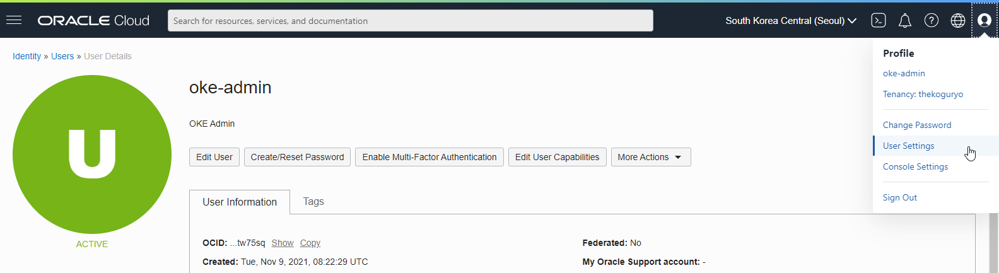
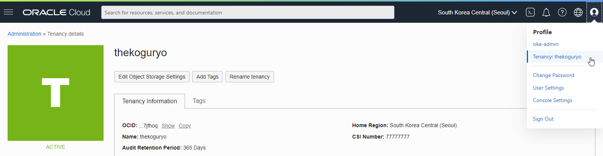
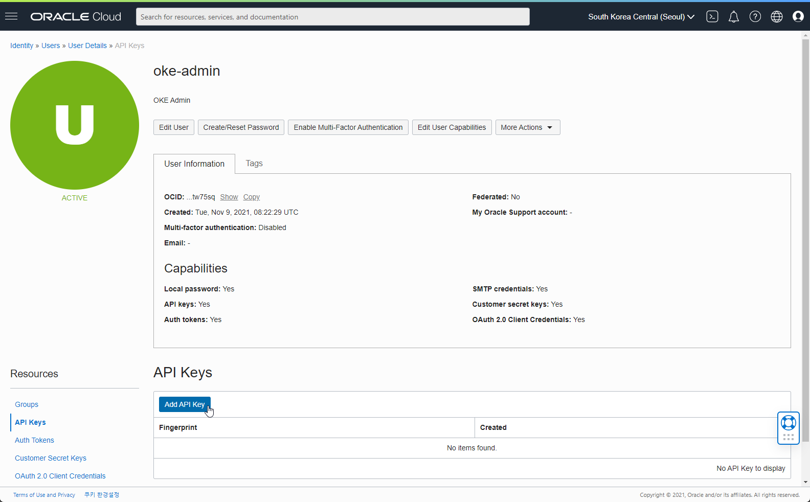
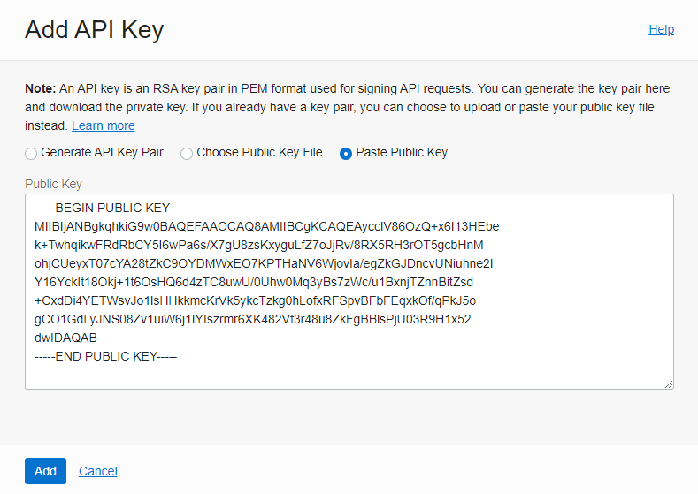
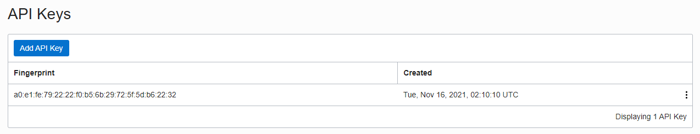
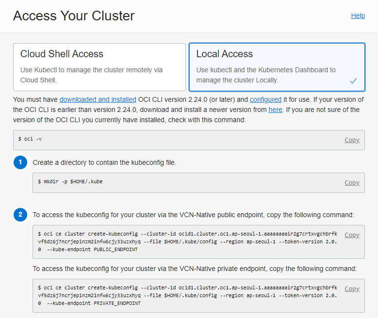

1.3.2 로컬 환경에서 클러스터 연결하기
OCI CLI 설치 및 환경 구성
OCI CLI 설치
공식 문서를 참고하여 OCI OCI를 설치합니다.
Oracle Linux 기준 예시
-
설치
bash -c "$(curl -L https://raw.githubusercontent.com/oracle/oci-cli/master/scripts/install/install.sh)" -
설치 확인
oci --version
OCI CLI Config File설정
-
설정을 위해 필요한 정보 사전 확인
-
user OCID
오른쪽 위 사용자 Profle에서 User Settings 클릭 후 사용자 OCID 확인 
-
Tenancy OCID
오른쪽 위 사용자 Profle에서 Tenancy 클릭 후 Tenancy OCID 확인 
-
Region: 사용할 Region
-
API Signing Key: 여기서는 편의상 새로운 Private Key, Public Key를 생성하는 것으로 선택하겠습니다.
-
-
-
setup config 실행
oci setup config- 실행 예시
[opc@bastion-host ~]$ oci setup config This command provides a walkthrough of creating a valid CLI config file. ... Enter a location for your config [/home/opc/.oci/config]: Enter a user OCID: ocid1.user.oc1..aaaaaaaazo6ilmezdaeozjcmsu6rcxnf5sjz2fau76kpdjvsbbakhqtw75sq Enter a tenancy OCID: ocid1.tenancy.oc1..aaaaaaaamd5zq7ohrxkmcsai23pp634k6i2eymnznv4d6ur7n5n4qj7jfhoq Enter a region by index or name(e.g. 1: ap-chiyoda-1, 2: ap-chuncheon-1, 3: ap-hyderabad-1, 4: ap-ibaraki-1, 5: ap-melbourne-1, 6: ap-mumbai-1, 7: ap-osaka-1, 8: ap-seoul-1, 9: ap-singapore-1, 10: ap-sydney-1, 11: ap-tokyo-1, 12: ca-montreal-1, 13: ca-toronto-1, 14: eu-amsterdam-1, 15: eu-frankfurt-1, 16: eu-marseille-1, 17: eu-zurich-1, 18: il-jerusalem-1, 19: me-dubai-1, 20: me-jeddah-1, 21: sa-santiago-1, 22: sa-saopaulo-1, 23: sa-vinhedo-1, 24: uk-cardiff-1, 25: uk-gov-cardiff-1, 26: uk-gov-london-1, 27: uk-london-1, 28: us-ashburn-1, 29: us-gov-ashburn-1, 30: us-gov-chicago-1, 31: us-gov-phoenix-1, 32: us-langley-1, 33: us-luke-1, 34: us-phoenix-1, 35: us-sanjose-1): 8 Do you want to generate a new API Signing RSA key pair? (If you decline you will be asked to supply the path to an existing key.) [Y/n]: Enter a directory for your keys to be created [/home/opc/.oci]: Enter a name for your key [oci_api_key]: Public key written to: /home/opc/.oci/oci_api_key_public.pem Enter a passphrase for your private key (empty for no passphrase): Private key written to: /home/opc/.oci/oci_api_key.pem Fingerprint: a0:e1:fe:79:22:22:f0:b5:6b:29:72:5f:5d:b6:22:32 Config written to /home/opc/.oci/config If you haven't already uploaded your API Signing public key through the console, follow the instructions on the page linked below in the section 'How to upload the public key': https://docs.cloud.oracle.com/Content/API/Concepts/apisigningkey.htm#How2
API Public Key 등록
-
OCI Config File에 등록한 사용자 상세 페이지로 이동
-
왼쪽 아래 Resources에서 API Keys 선택
-
Add Public Key 클릭

-
oci setup config 실행 후 생성된 API Public Key 확인
[opc@bastion-host ~]$ cat ~/.oci/oci_api_key_public.pem -----BEGIN PUBLIC KEY----- MIIBIjANBgkqhkiG9w0BAQEFAAOCAQ8AMIIBCgKCAQEAycclV86OzQ+x6I13HEbe ... gCO1GdLyJNS08Zv1uiW6j1IYIszrmr6XK482Vf3r48u8ZkFgBBlsPjU03R9H1x52 dwIDAQAB -----END PUBLIC KEY----- -
생성된 API Public Key 내용을 API Public Key 추가

-
OCI CLI를 위한 API Public Key 등록 완료 
연결 확인
-
다시 리눅스 호스트로 돌아가
oci os ns get을 실행하여 연결 확인[opc@bastion-host ~]$ oci os ns get { "data": "cnrlxx3w0wgq" }
kubectl CLI 설치 및 환경 구성
kubectl CLI 설치
공식 문서를 참고하여 kubectl OCI를 설치합니다.
Linux 기준 예시
-
설치
curl -LO "https://dl.k8s.io/release/$(curl -L -s https://dl.k8s.io/release/stable.txt)/bin/linux/amd64/kubectl" sudo install -o root -g root -m 0755 kubectl /usr/local/bin/kubectl
kubeconfig 파일 생성하기
-
생성한 OKE 클러스터 상세 페이지에서 Access Cluster를 클릭합니다.
-
Local Access 를 클릭합니다.

-
PRIVATE_ENDPOINT
Kubernetes API 접근도 Private IP를 통해서 할 때 사용합니다. PRIVATE_ENDPOINT, 즉 Private IP로 접근을 해야 하므로, bastion host 등 내부 IP로 접근이 가능한 서버에서 수행할 때 사용합니다.
- bastion host는 외부에서 SSH로 접근 가능하게 22 포트 오픈이 필요하며, 내부적으로는 OKE 클러스터의 Kubernetes API 및 Worker Nodes 들에 접근이 가능해야 합니다.
- kubeconfig 파일 생성 및 클러스터에 접속 확인
[opc@bastion-host ~]$ oci ce cluster create-kubeconfig --cluster-id ocid1.cluster.oc1.ap-seoul-1.aaaaaaaair2g7crtxvgchbrfkvf5dz6j7ncrjepinzm2infw6cjy33uzxhyq --file $HOME/.kube/config --region ap-seoul-1 --token-version 2.0.0 --kube-endpoint PRIVATE_ENDPOINT New config written to the Kubeconfig file /home/opc/.kube/config [opc@bastion-host ~]$ kubectl cluster-info Kubernetes control plane is running at https://10.0.0.4:6443 CoreDNS is running at https://10.0.0.4:6443/api/v1/namespaces/kube-system/services/kube-dns:dns/proxy To further debug and diagnose cluster problems, use 'kubectl cluster-info dump'. -
PUBLIC_ENDPOINT
Kubernetes API 접근도 Public IP를 통해서 할 때 사용합니다. OKE 클러스터 생성시 Kubernetes API에 Public IP를 부여한 경우에 사용 가능한 방법입니다. 실제 kubeconfig 파일 생성하는 명령(oci ce cluster crate-kubeconfig ~~)은 마지막 옵션값인 PUBLIC_ENPOINT이외는 동일한 명령합니다.
** 이 글은 개인으로서, 개인의 시간을 할애하여 작성된 글입니다. 글의 내용에 오류가 있을 수 있으며, 글 속의 의견은 개인적인 의견입니다. **